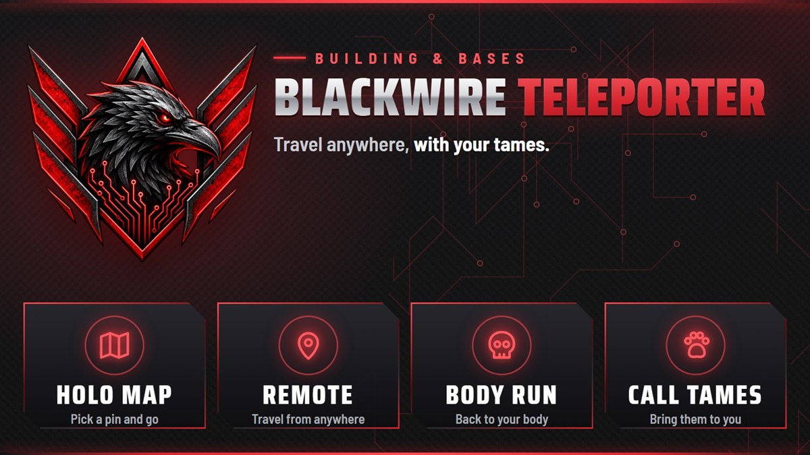
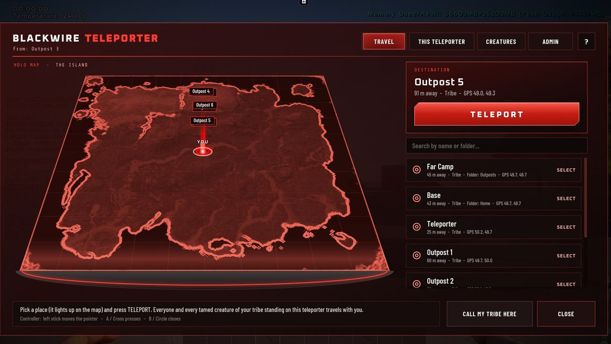
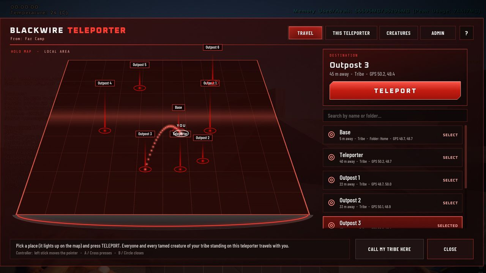
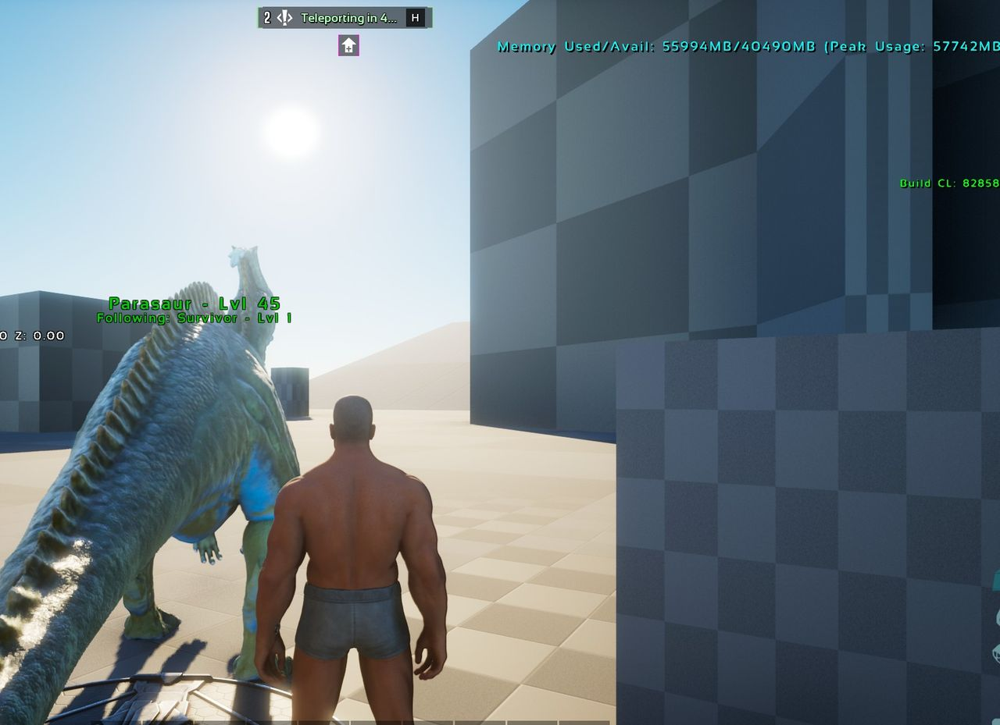
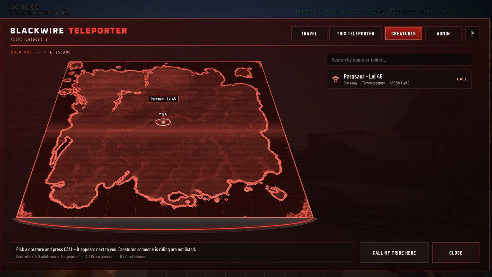
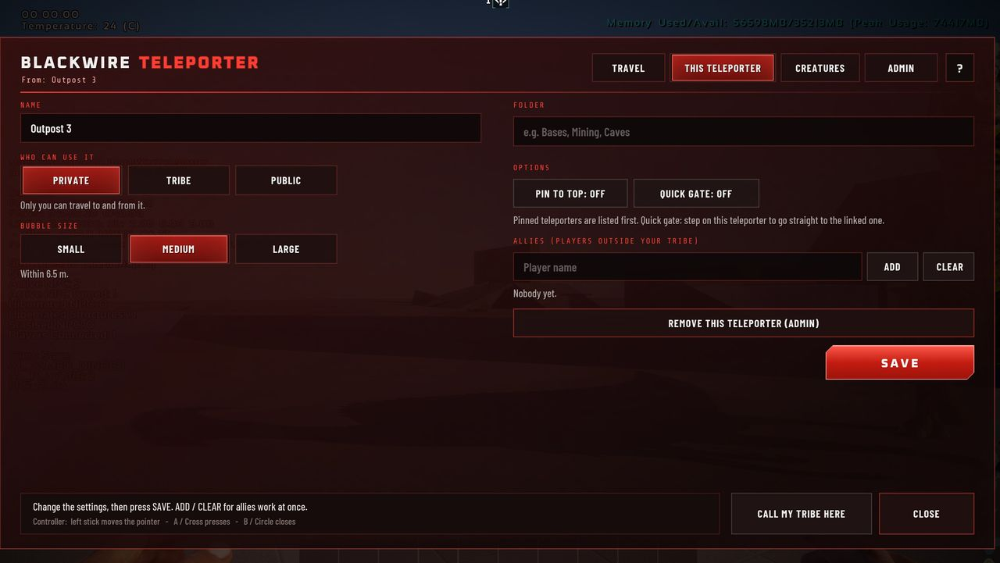
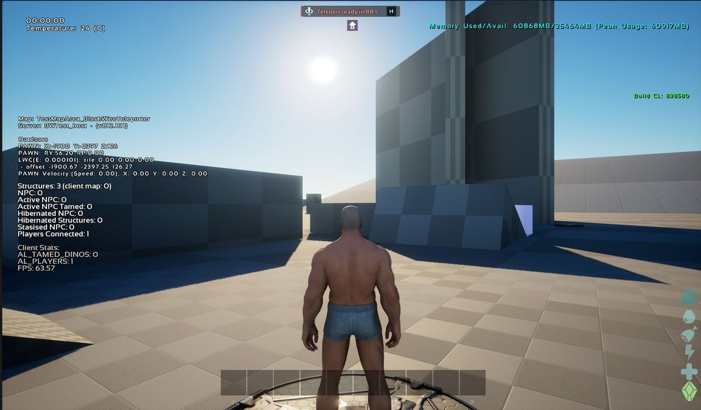

BLACKWIRE
BLACKWIRE
BLACKWIRE
BLACKWIRE
Place teleporters, name them, keep them private, tribe or public, and travel with your creatures. Controller friendly.

Travel from anywhere, then use Go back to return.
The Remote's list includes your body and dropped items, plus obelisks and tribe mates.
Link two pads and step on one to go straight to the other.
The Creatures tab calls your tamed creatures to you.
Your tribe mates get "Join
Add another tribe as allies so they can use your tribe pads.
You get a warning when an enemy player is within 30 m of where you are going. Owners can add a combat lock and block caves.
Every teleporter on the server, instant travel and a teleport log. Admins can remove any teleporter.






cheat giveitem "Blueprint'/BlackWire_Teleporter/Remote/PrimalItem_BWT_Remote.PrimalItem_BWT_Remote'" 1 0 0cheat giveitem "Blueprint'/BlackWire_Teleporter/Pad/PrimalItemStructure_BWT_Pad.PrimalItemStructure_BWT_Pad'" 1 0 0Ask in the Teleporter channel on the BlackWire Mods Discord.